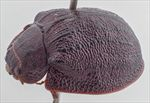
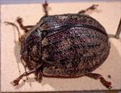
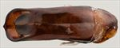
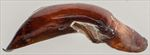
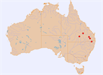

Click on images to enlarge
![Male, Chinchilla, southern Queensland [QM]](assets/image/Ta235/Ta235_AQM-Ta0018b_SM.jpg){kind=link}

Male, Chinchilla, southern Queensland [QM]
![Adult, Fletcher, S.E. Queensland [QM]](assets/image/Ta235/Ta235_QM-Ta004_SM.jpg){kind=link}

Adult, Fletcher, S.E. Queensland [QM]
{kind=link}

Aedeagus, dorsal view (Chinchilla, southern Queensland)
{kind=link}

Aedeagus, lateral view (Chinchilla, southern Queensland)
{kind=link}

Distribution
Name
Trachymela sp. Ta235
Reference specimen
GM-018, “Allinga”, Chinchilla, Qld [Queensland Museum].
Adult Description
Length: ♀ 11.9 mm [1], ♂ 12.4-13.3 mm [3].
Colour: head dark reddish-brown, areas of black around fronto-clypeal suture and on clypeus, extending onto frons to level of rear of eyes, labrum straw-brown, mandibles substantially black or at least with black tips; antennomeres uniformly straw brown; pronotum: dark reddish-brown, fractionally darker shade as head, with a darker, almost round patch near each lateral edge of disc; scutellum: dark brown, slightly darker than adjacent area of pronotum, with margins broadly lined with black; elytra: brown, same shade as pronotum, with black ridges and small black verrucae present in 3 or 4 thin longitudinal bands on disc, the most prominent is VR3, which is in the form of a continuous ridge from the base to the post-basal depression, after which it becomes a line of isolated verrucae, mostly small, though a few scattered larger ones are present, VR5 is also prominent as a thin black line composed of small, closely-spaced verrucae, some extended transversely for a short distance, a few other black verrucae are present, not always clearly within one of the series; suture dark-brown from scutellum to at least elytral summit, with its thickness greater around summit, humeral callus black; venter: reddish- brown, legs of similar shade, abdominal sternites similar or fractionally paler, inside surface of elytral epipleura black. Cuticular wax: light-brown, distributed lightly and unevenly over whole of dorsal surface
Shape: almost evenly curved from scutellum to at least 80% of distance to apex where curvature usually increases noticeably, greatest height viewed laterally well in front of middle (height=0.46%BL). Head; punctures variable, most often relatively fine (pd~1.5-2xef), but often a mix of sizes may be present from 1xef to >3xef, distribution usually relatively uniform, though an unpunctured area may be present in centre just above level of rear of eyes. Antennae moderately long (AL ♂=41.2%BL, ♀=?%BL), filiform. Pronotum; evenly curved transversely over discal area, with a deep foveal depression behind eyes and a strongly explanate margin, foveal elevation absent, discal area slightly to moderately rugulose, sometimes with a small elevation at each lateral boundary, sometimes with a thin, unpunctured ridge along centre line, punctures clearly impressed and evenly and densely distributed in discal area, size similar or fractionally larger than those on head becoming considerably coarser from foveal depression to lateral margins. Front margins join lateral margins in a smoothly rounded but tight right-angle, with lateral margin initially straight for almost half their length, then curving smoothly towards rear margin. Scutellum; surface usually smooth and shining, rarely slightly more coarsely textured, unpunctured. Elytra; surface curved evenly over disc transversely, often prominently explanate at margins, whole surface, including margins, very granular with punctures almost hidden by a network of raised interstices over much of the surface, many smooth, elevated verrucae, some with small central punctures, some extended into short ridges are scattered over elytral surface (see colour above for arrangement), sometimes the raised interstices are in the form of short or even quite extended transverse ridges, most prominently just behind antero-median depression, posterior third of elytral suture carinate, surface discontinuous under humeral callus; posterior half of marginal area prominently concave, sometimes separated from anterior half by a broad transverse ridge. Vertical extension of epipleura moderate (HCE/PW=0.39). Venter; Prosternal process almost parallel-sided, sometimes narrowing slightly anteriorly, closed anteriorly, short setae sparsely distributed over prosternal process and mesosternum, mostly 1 (rarely 2) setae on anterior and 1 on median trochanter; front edge of metasternum beveled, truncate. Aedeagus; long and relatively broad (LPE=39.6%BL, WPE/LPE=0.30), in dorsal view, almost parallel-sided, narrowing just slightly from basal sulcus and widening again at ostium, with the sides between these points very slightly sinuous so that the narrowest point is a little behind rear of ostium, from the widest point anteriorly sides converge smoothly towards apex in a tight arc, dorso-median channel very short and thin, extending only a short way past ostium, ostial opening almost quadrate, with the ostial flaps protruding about two-thirds of way towards apex in the ostial depression; spatula small, tip small and smoothly triangular; in lateral view, curved sharply through about 30⁰ near base then ventral surface almost straight apex, dorsal surface straight and parallel to ventral surface from basal sulcus to rear of ostium, then converging evenly towards ventral surface, tip deflexed.
Larvae
unknown.
Eggs
unknown.
Similar species
Ta73 – this species, which occurs in the mallee areas of southern Australia is very similar morphologically, of similar size and clearly closely related. There is little to distinguish them on external morphology: the pronotum of Ta73 tends to be smoother in texture, and it only rarely has the transverse “wrinkles” on the elytra that are often found in Ta235. The aedeagi, though similar in structure, differ in details such as their width and shape of their ostium.
Notes
One of the larger species of Trachymela, seemingly restricted to areas west of the Great Dividing Range in southern and central Queensland and northern New South Wales. Nothing is known of its host species.
Copyright © 2026. All rights reserved.